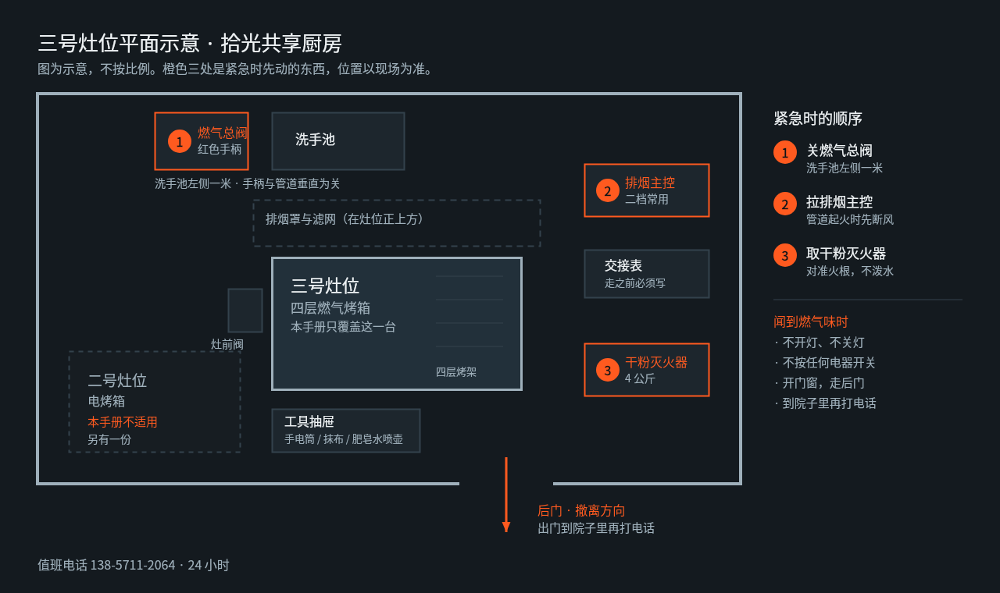

你现在要做哪件事
刚到店、准备开工：从「开工前六项检查」开始，大约 12 分钟。
设备已开、要烤东西：直接看「预热」与「装炉与烤制」。
今天结束、准备走人：从「熄火与降温」往下，大约 35 分钟，其中 20 分钟是等待。
有东西不对劲：跳到「四类故障现场处置」。闻到燃气味或看到明火失控，先别看手册，按「立即撤离」那一条做。
本手册只覆盖三号灶位的四层燃气烤箱与其上方的独立排烟支路。二号灶位的电烤箱不适用，那台另有一份。
立即撤离的三种情形
闻到燃气味：不要开灯、不要关灯、不要按任何电器开关。开门窗，从后门离开，到院子里再打电话。
烤箱内明火窜出炉门或排烟管道起火：不要泼水，不要打开炉门查看。关闭墙面上的燃气总阀（红色手柄，在洗手池左侧一米），拉下排烟主控开关，用店内 4 公斤干粉灭火器对准火根喷射，然后撤离。
有人被高温灼伤面积超过一个手掌：冷水持续冲淋 20 分钟，不要涂任何东西，不要挑破水泡，同时叫救护车。
三种情形都要在离开后拨打 24 小时值班电话 138-5711-2064，由值班人通知消防与燃气公司。自己判断「好像没事了」再回去是最常见的二次事故原因。

开工前六项检查
预计 12 分钟。需要：手电筒、抹布、检漏用的肥皂水喷壶。全部在灶位下方的工具抽屉里。
一、燃气总阀与灶前阀是否都在关闭位。手柄与管道垂直为关。
二、软管接口用肥皂水喷一遍，看有没有持续冒泡。有泡就停在这里，别继续，打值班电话。
三、炉膛内有没有上一班遗留的烤盘、锡纸、油纸。任何一样留在里面点火都会起烟。
四、四层烤架是否卡到位，晃动不超过一指宽。
五、油脂盘是否已清空并复位。满油脂盘是本店历史上唯一一次真实起火的原因。
六、抬头看排烟罩，滤网是否装好、有没有明显油垢挂条。挂条能拉出丝就是该清了，今天先记录，别硬撑一整天。
点火与预热
预计 18 分钟，其中 15 分钟是等待，可以同时做备料。
先开排烟，后开火，顺序不能反。排烟旋钮打到二档，听到风机稳定运转再继续。
开燃气总阀，再开灶前阀。按住点火旋钮到底，保持 3 秒，听到咔哒声后旋到点火位。松手后火焰应当保持，若 10 秒内熄灭，等 3 分钟散气再试，连续三次点不着就停手报修。
观察火焰颜色。稳定的淡蓝色是正常。发黄、飘忽、有黑烟，说明进风不足或喷嘴堵塞，关火报修。
温度旋钮打到目标温度，等待温度指示灯第一次熄灭，这时炉温才真正到位。指示灯亮着就装炉是本店最常见的失败原因，成品外层焦而中心夹生。
装炉与烤制
戴长袖隔热手套，不要用湿抹布垫手。湿布遇高温瞬间产生蒸汽，比干烫更严重。
开炉门时人站在门轴一侧，让热浪先出去 2 秒再伸手。
四层同时使用时，上下层温差约 15 摄氏度，上层更热。同一批产品需要在烤制过半时上下对调，否则颜色不匀。
单次开门时间控制在 8 秒以内。每开一次门，炉温下降约 20 摄氏度，恢复需要 3 分钟。
烤制中禁止离开厨房。计时器要带在身上，不要放在台面上依赖听声音。
熄火与降温
预计 25 分钟，其中 20 分钟是等待，这段时间可以做台面清洁。
先关灶前阀，再关燃气总阀，最后关温控旋钮。顺序与开机相反。
排烟风机不要马上关。保持二档继续运行 20 分钟，把管道内的余热与油烟抽干净。管道带着热油关机是油垢积厚最快的方式。
炉门留一条缝散热，不要全开。全开会让炉腔骤冷，门封条老化加快。
炉温降到 60 摄氏度以下（摸炉门外壳能连续接触 3 秒）再进行下一步。
收工清洁
预计 15 分钟。需要：碱性去油剂、百洁布、油脂盘专用桶。
取出四层烤架与油脂盘，油脂倒入灶位旁的废油桶，不要倒进水槽。
炉腔内壁喷去油剂，静置 5 分钟再擦。趁热直接擦会把油膜抹开摊成一层，越擦越花。
门封条只用清水擦，去油剂会让硅胶变硬开裂。
排烟滤网每周一次取下浸泡，日常只擦表面。取下时下方垫毛巾，滤网上的存油会滴。
最后在灶位墙上的交接表上写下：使用时长、最高温度、异常情况。没有异常也要写「无」，空白会被下一班当成没人用过。
四类故障现场处置
点不着火，且能闻到轻微燃气味：立即停手，关阀，开窗，打值班电话。不要连续尝试点火。
点得着但火焰发黄跳动：通常是喷嘴积碳或进风口被油垢堵住。关火，等冷却，用手电看进风口，能看到明显油垢的记录报修，不要自己拆喷嘴。
温度上不去，指示灯长亮不灭：先确认炉门是否关严、门封条有没有夹到烤盘。都正常则是温控探头问题，停用报修。
排烟风机有异响或抽力明显变弱：多半是滤网糊死或皮带松。停机检查滤网，滤网干净仍然异响的挂牌停用。
以上四类都不需要你判断根因，判断到「该不该继续用」为止就够了。报修记录写在交接表背面，注明日期、灶位、现象、你的名字。
关键数值速查
燃气总阀位置：洗手池左侧一米，红色手柄，垂直为关。
点火保持时间 3 秒，失败后等待 3 分钟再试，连续三次即停。
预热判定：温度指示灯第一次熄灭，不是听到提示音。
上下层温差约 15 摄氏度，烤制过半上下对调。
单次开门不超过 8 秒，恢复炉温约 3 分钟。
收工后排烟继续运行 20 分钟。
安全接触温度 60 摄氏度，判定方法是外壳能连续接触 3 秒。
值班电话 138-5711-2064，24 小时。